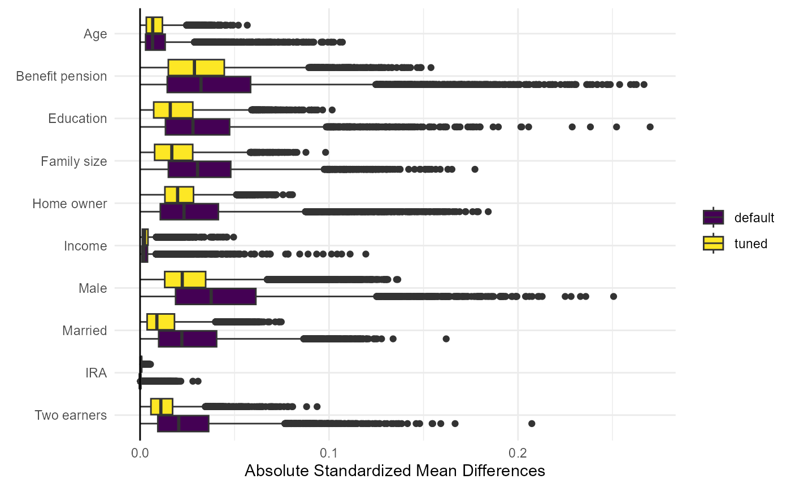

Application 401(k) - heterogeneous effects
Michael C. Knaus
11/24
Source:vignettes/Application_heterogeneous_401k.Rmd
Application_heterogeneous_401k.RmdThis notebook runs the application described in Section 5.2 of Knaus (2024). The first part replicates the results presented in the paper, the second part provides supplementary information
1. Replication of paper results
Getting started
First, load packages and set the seed:
if (!require("OutcomeWeights")) install.packages("OutcomeWeights", dependencies = TRUE); library(OutcomeWeights)
if (!require("hdm")) install.packages("hdm", dependencies = TRUE); library(hdm)
if (!require("grf")) install.packages("grf", dependencies = TRUE); library(grf)
if (!require("tidyverse")) install.packages("tidyverse", dependencies = TRUE); library(tidyverse)
if (!require("viridis")) install.packages("viridis", dependencies = TRUE); library(viridis)
if (!require("reshape2")) install.packages("reshape2", dependencies = TRUE); library(reshape2)
if (!require("ggridges")) install.packages("ggridges", dependencies = TRUE); library(ggridges)
set.seed(1234)Next, load the data. Here we use the 401(k) data of the
hdm package. However, you can adapt the following code
chunk to load any suitable data of your choice. Just make sure to call
the treatment D, covariates X, and instrument
Z. The rest of the notebook should run without further
modifications.
data(pension) # Find variable description if you type ?pension in console
# Treatment
D = pension$p401
# Instrument
Z = pension$e401
# Outcome
Y = pension$net_tfa
# Controls
X = model.matrix(~ 0 + age + db + educ + fsize + hown + inc + male + marr + pira + twoearn, data = pension)
var_nm = c("Age","Benefit pension","Education","Family size","Home owner","Income","Male","Married","IRA","Two earners")
colnames(X) = var_nmGet outcome model and smoother matrix
The grf package does not save the nuisance parameter
models. Thus, we could not retrieve the required smoother matrices after
running causal_forest and instrumental_forest
below. Therefore, we estimate the outcome nuisance model externally to
pass the nuisance parameters later to the functions. As described in
Section 5.2 of the paper, we run a default and a tuned version:
### Externally calculate outcome nuisance
rf_Y.hat_default = regression_forest(X,Y)
rf_Y.hat_tuned = regression_forest(X,Y,tune.parameters = "all")
Y.hat_default = predict(rf_Y.hat_default)$predictions
Y.hat_tuned = predict(rf_Y.hat_tuned)$predictionsThen, we extract the smoother matrix using
get_forest_weights():
# And get smoother matrices
S_default = get_forest_weights(rf_Y.hat_default)
S_tuned = get_forest_weights(rf_Y.hat_tuned)For illustration, check that random forest is an affine smoother by summing all smoother vectors and checking whether they sum to one:
## RF affine smoother? TRUECausal forest
Run causal forest with the externally estimated outcome nuisance:
# Run CF with the pre-specified outcome nuisance
cf_default = causal_forest(X,Y,D,Y.hat=Y.hat_default)
cf_tuned = causal_forest(X,Y,D,Y.hat=Y.hat_tuned,tune.parameters = "all")Get the out-of-bag CATEs:
Use the new get_outcome_weights() method, which requires
to pass the externally estimated outcome smoother matrix:
omega_cf_default = get_outcome_weights(cf_default, S = S_default)
omega_cf_tuned = get_outcome_weights(cf_tuned, S = S_tuned)Observe that the outcome weights recover the grf package
output:
cat("ω'Y replicates CATE point estimates (default)?",
all.equal(as.numeric(omega_cf_default$omega %*% Y),
as.numeric(cates_default)
))## ω'Y replicates CATE point estimates (default)? TRUE
cat("\nω'Y replicates CATE point estimates (tuned)?",
all.equal(as.numeric(omega_cf_tuned$omega %*% Y),
as.numeric(cates_tuned)
))##
## ω'Y replicates CATE point estimates (tuned)? TRUENow calculate the absolute standardized mean differences and plot them for each CATE and variables (Figure 3 in paper):
cb_cate_default = standardized_mean_differences(X,D,omega_cf_default$omega,X)
cb_cate_tuned = standardized_mean_differences(X,D,omega_cf_tuned$omega,X)
smd_default = t(abs(cb_cate_default[,3,]))
smd_tuned = t(abs(cb_cate_tuned[,3,]))
# Melt the smd_default matrix to long format
df_default_long = melt(smd_default)
df_default_long$Group = "smd_default" # Add a group identifier
# Melt the smd_tuned matrix to long format
df_tuned_long = melt(smd_tuned)
df_tuned_long$Group = "smd_tuned" # Add a group identifier
# Combine the two data frames
df_long = rbind(df_default_long, df_tuned_long)
# Rename the columns for clarity
colnames(df_long) = c("Row", "Variable", "Value", "Group")
# Create the ggplot
figure3 = ggplot(df_long, aes(x = factor(Variable, levels = rev(unique(Variable))), y = Value, fill = Group)) +
geom_boxplot(position = position_dodge(width = 0.8)) +
labs(x = element_blank(), y = "Absolute Standardized Mean Differences") +
scale_fill_manual(values = viridis(2),
name = element_blank(),
labels = c("default", "tuned")) +
theme_minimal() +
geom_hline(yintercept = 0, linetype = "solid", color = "black") +
coord_flip()
figure3